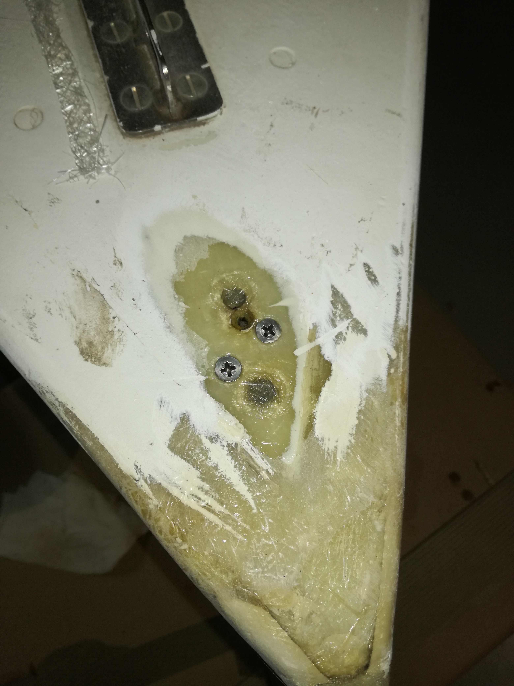
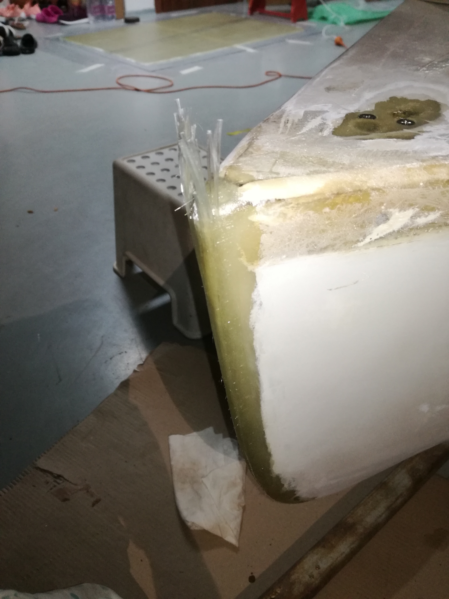
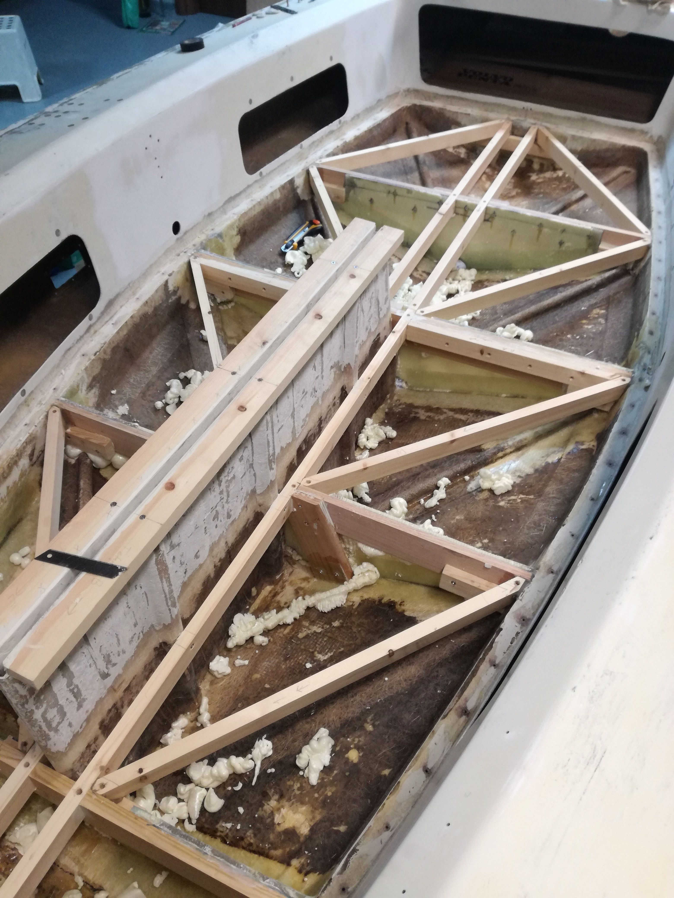
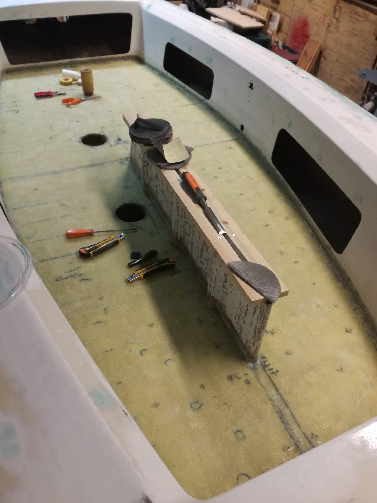
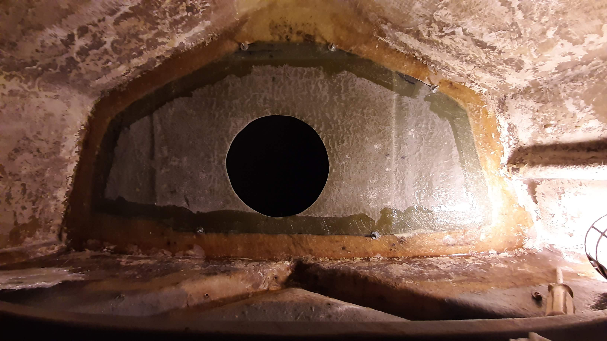

A felújítás során egy új padlót és új légszekrényt kapott a hajó. Ez rengeteg műgyantázást, laminálást és üveggyapottal való munkát jelentett.

Amikor hozzánk került a hajó az orra rendkívül rossz állapotban volt. Egyértelmű jelei mutatkoztak annak, hogy gondatlan gazdák többször nekimentek vele a partnak/mólónak, esetleg egész éjszakákon keresztül dörzsölhette a stéget.

A hajó orrába most egy kb. 20mm átmérőjü üvegszálköteg van belaminálva. Senkinek sem ajánlatos belerúgni...

Az egész padlót újra kellett építeni mert bevolt szakadva a régi. Ez részben asztalosmunkát is jelentett, mert az egész rácsszerkezetet újta kellett építeni, de nagyobb rész volt műanyag munka, mert, a rácsszerkezetre egy műanyag laminát szendvics réteg került.

És itt már a helyén is van az új padló. Az anyaga egy olyan speciális üvegszövet, amit víztartályok falaként használnak elsősorban. Nyilván olyankor professzionális körülmények között készítik el, így, garázskörülmények között nem lett annyira esztétikus, de így is jól néz ki. A két üvegréteg közé puliureténhabot nyomtunk a vízzáróság növelésének érdekében.

A hajó orrában egy kb 500L-es légszekrény található. Ez az elzárt tér azért van a hajókban, hogy felborulás után, amikor a hajót alapvetően elárasztja a víz, legyen olyan hermetikusan elzárt térfogat ami fenntartja a hajótestet. Ennek a légszekrénynek a falát kellett teljesen újjáépíteni.